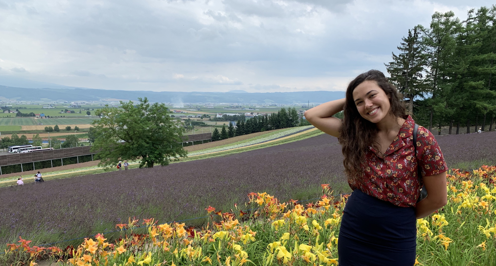
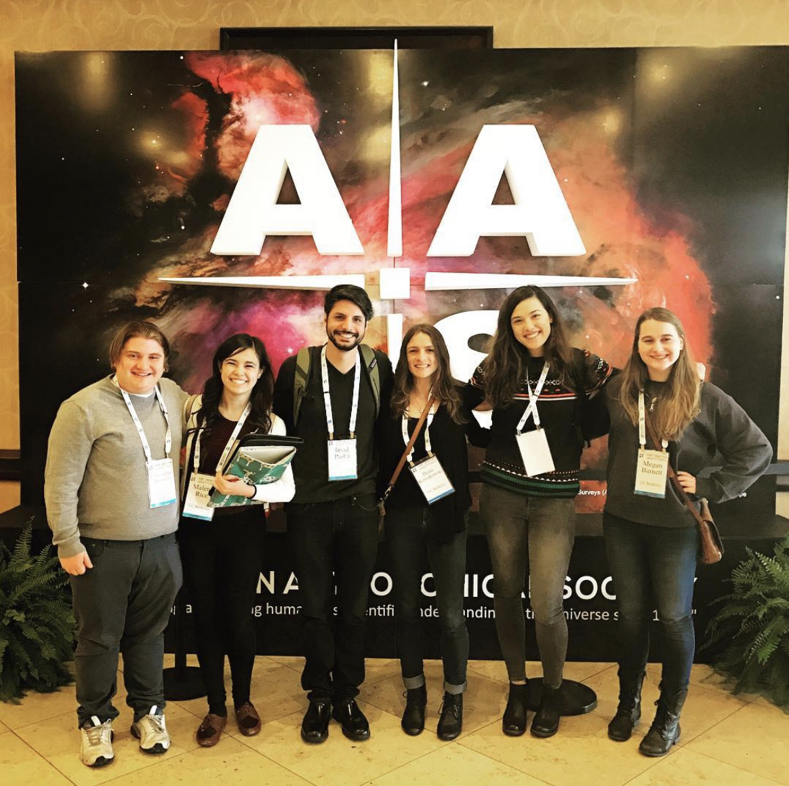
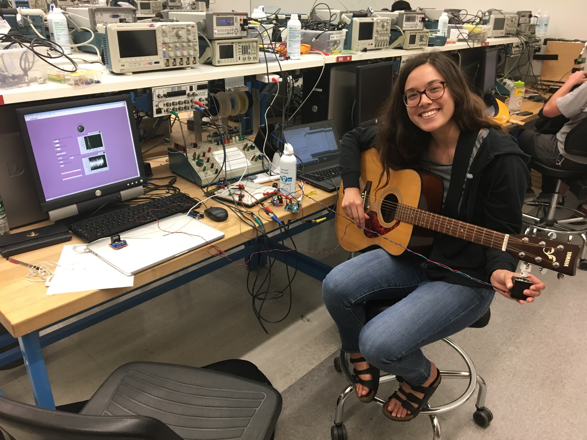
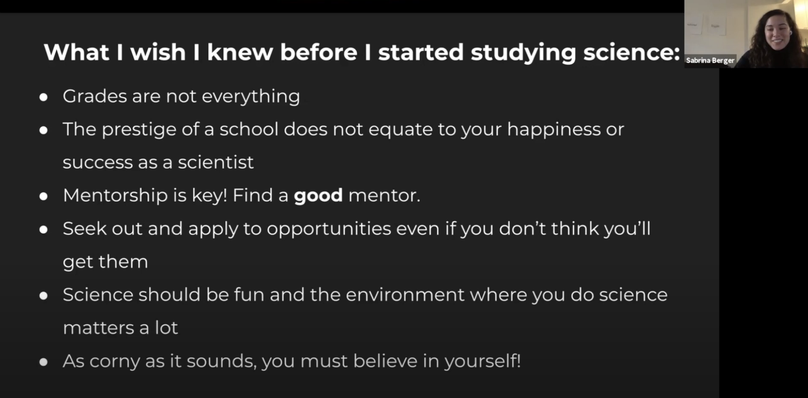

McGill University Physics PhD Student
I'm passionate about astrophysics at radio wavelengths and ethical data science.
About

Me in Hokkaido, Japan!
Growing up I thought I wanted to be a musician, but I kept finding myself enjoying mathematics and science just as much as music. Numbers came more easily to me than musical pitches. After receiving a scholarship to study abroad in Italy for a year in high school, I needed to decide which one to pursue as a career. Astronomy or music?
I chose to pursue a career in science. However, I still value art just as much as science and try to find time to enjoy poetry and music.
After my year abroad, I transferred to UC Berkeley from Diablo Valley College after two years. While at UC Berkeley, I tried out many different research projects from particle physics to exoplanets, and I ended up finding that my favorite was radio astronomy.
I finished my astrophysics degree at UC Berkeley in 2018. I then took a gap year before graduate school where I worked for a semester at NASA Ames in Mountain View, California and solo traveled on a budget to several countries. My favorite was a 10 day silent retreat in a Buddhist monastery in Kathmandu, Nepal. I submitted my
final graduate applications huddled up by myself on a park bench with my laptop in Cuba -- the only place public WiFi was available at the time. I'm now in Montréal at McGill University pursuing my PhD in physics.

Me at my very first AAS with friends and astronomers from UC Berkeley.
I got my start in teaching as a community college student in Northern California. I was a tutor for the introductory astronomy courses and helped students of all backgrounds, including students who struggled in English and special needs students. This experience spearheaded my interest in becoming a better teacher and tutor. I wanted to learn how to be an effective and compassionate instructor. As someone who did not have many chances to experience active learning in her education, I strive to incorporate active learning into all my teaching experiences.
Mentorship
(Good) mentorship has been the most important key to me continuing in my career in academia. I take mentorship very seriously and have mentored underrepresented students through their burgeoning careers in physics at UC Berkeley, Dartmouth University, and McGill University. I led a very atypical path into science and hope to help others along their path to succeed in theirs and hope to come from a place of equality. I believe mentorship is the most important way to help students of all backgrounds succeed and an underdeveloped part of Equity, Diversity, and Inclusion efforts. If you are an undergraduate or early graduate student and wish to explore an informal mentorship with me, please contact me through the contact form. Mentorship looks like all different things and does not have a time limit or minimum time. Even just questions or comments are completely welcome!
Deliver 25 hours of lectures on Python concepts each month.
Provide 1 on 1 tutoring, mentorship, and homework and final project feedback.
Helped 150+ women and non-binary students of all ages learn Python for the first time.
Coding Workshops
McGill Physics Hackathon (Introduction to Machine Learning), 20+ students
McDonald Particle Physics Summer School (Introduction to Unix/Linux), 100+ students
McGill Teaching Assistant
As a McGill Teaching Assistant, I have been able to put my teaching skills into practice and further my confidence as a teacher. I have taught tutorials, held office hours, made solution sets, and graded while a TA.
Signal Processing (Spring 2021/2022)
Introduction to Astrophysics (Mixed Honors Undergraduate and Graduate Course) (Fall 2021)
Computational Physics with Applications (PHYS 512) (Mixed Honors Undergraduate and Graduate Course) (Fall 2019)
Private Tutoring
Over the years, I also spent 150+ hours as both a group and private physics and programming tutor to elementary through community college students. This involved crafting sample problems and providing mini-lectures on the subject matter. (January 2016 - June 2021)
Outreach

A screenshot from my talk at Vanier College in Montréal, QC.
My Path Getting Involved in Public Engagement
I began participating in astronomy related public engagement as soon as I chose my major. My first experience was as a volunteer at the local Chabot Space and Science Center> near me in 2013. Since then, my passion for participating in public engagement went into full force. I became an American Astronomical Society (AAS) Astronomy Ambassador while at UC Berkeley, which included a two-day workshop on best practices in science public engagement. I also served as a McGill Physics Matters Outreach Coordinator throughout 2020. While in this role, I co-led the organization of the McGill Physics Hackathon in November, 2020 which included organizing eight coding workshops on Python to Machine Learning attended by more than 200 people. I also helped organize and facilitate a variety of programs and public astronomy talks supporting outreach in the Montreal community and beyond. This included seeking out and establishing an ongoing international collaboration with the McGill Space Insititute and Dyer Observatory at Vanderbilt University .
Mental Health in Academia
I am the McGill Graduate Association of Physics Students Mental Health Officer and a member of the McGill EDI (Equity, Diversity, and Inclusion) Mental Health Task Force. These roles involve organizing talks and workshops, an orientation for new students, and compiling mental health resources to all students. I also led the application of a successful grant application to the Mary H. Brown Fund for $1500 CAD to support the mental wellness in physics talk series that I started.
Public Talks
I’ve also given invited talks on my research and my path through science at
Khan Lab School in Mountain View, California (30 students)
Saratoga High School in Saratoga, California (20 students)
Public Engagement is For Everyone
As I participated more in outreach, I found that my main interest lies in reaching those who have not had as much access to science engagement programs. Currently, I strive to target my public engagement almost entirely to underserved communities. Through the Astronomy of the Pacific's Project ASTRO Teacher Volunteer (September 2016 - June 2017), I developed curriculum and instructed a fifth-grade class in astronomy at Rosa Parks Elementary School in Richmond, California. Since then, I also participated in a month long active learning and feedback workshop through the AAS and Astronomical Society of the Pacific that culminated in a presentation to Fischer Middle School students in San Jose, California.